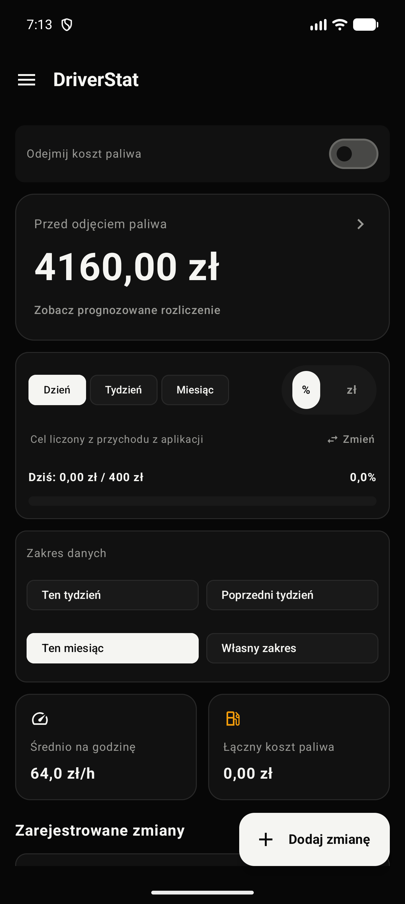
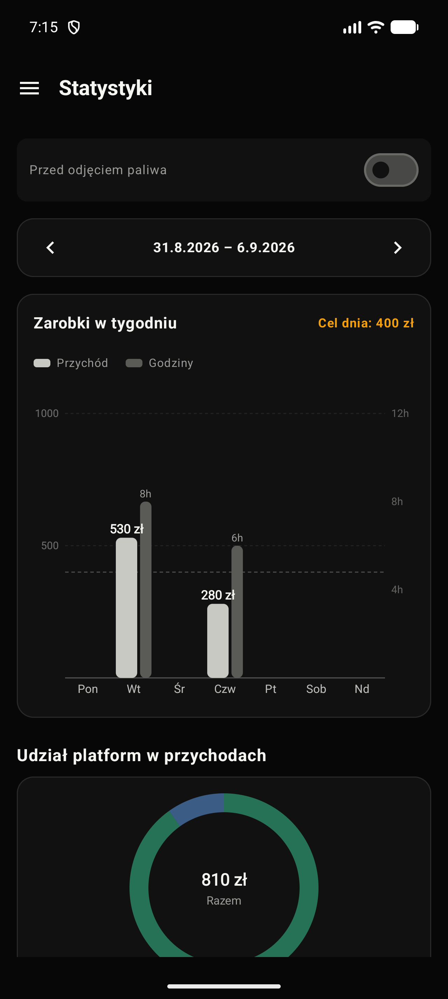
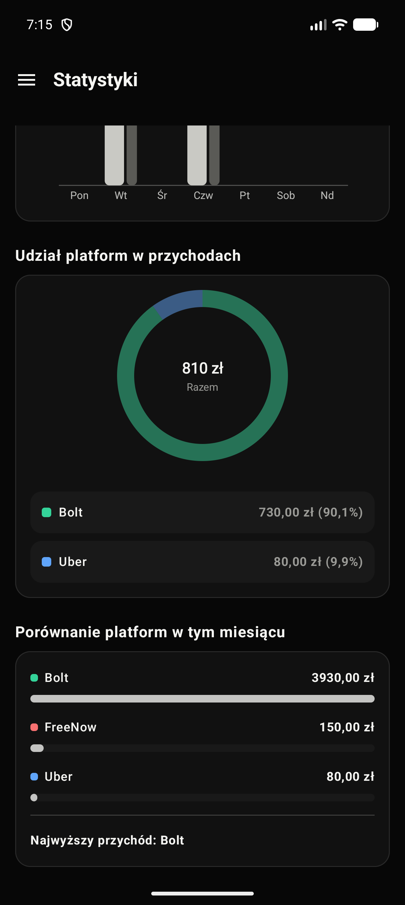
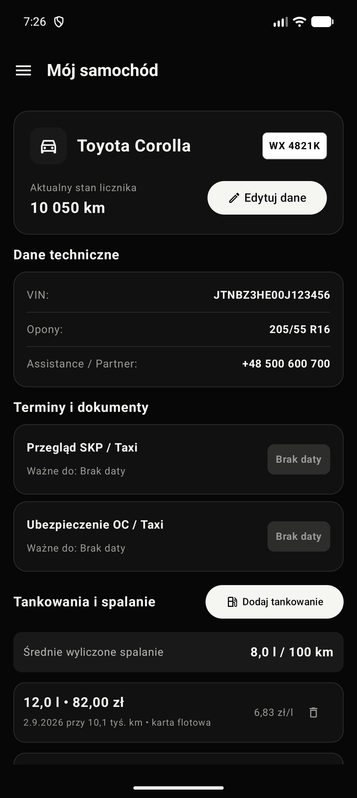
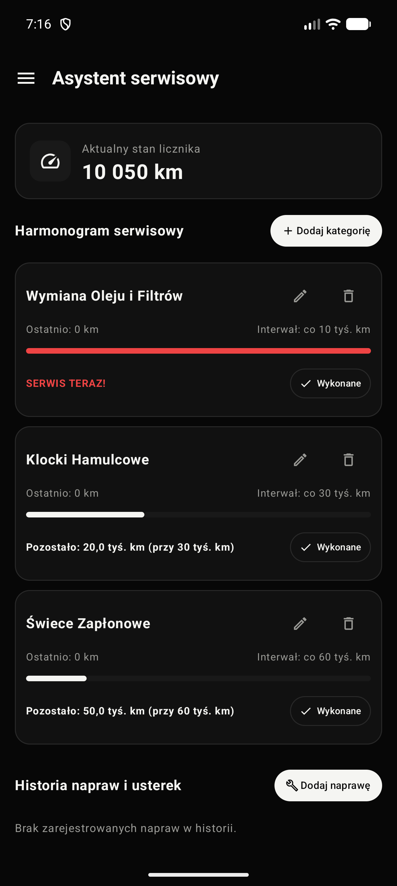

Bieżący szacunek zarobków
Orientacyjny wynik aktualizowany po dodaniu kolejnej zmiany, bez czekania na rozliczenie partnera.
DriverStat powstaje dla kierowców, którzy chcą wiedzieć, ile szacunkowo zarobili — teraz, a nie dopiero po otrzymaniu rozliczenia.

01
Dlaczego DriverStat
Stawki, prowizje, paliwo, koszty i czas pracy szybko przestają mieścić się w głowie. DriverStat ma zebrać je w jednym miejscu i pokazać prosty, orientacyjny obraz tygodnia.
Aplikacja w praktyce
To aktualny wygląd rozwijanej aplikacji. Widoczne kwoty i dane samochodu są przykładowe.




Co ma robić
Aplikacja jest nadal rozwijana. Poniższe funkcje opisują obecny kierunek produktu, a nie obietnicę gotowego wydania.
Orientacyjny wynik aktualizowany po dodaniu kolejnej zmiany, bez czekania na rozliczenie partnera.
Paliwo, serwis i inne wydatki uwzględnione tam, gdzie sprawdzasz wynik pracy.
Czytelne podsumowania czasu, przejazdów i szacowanego wyniku.
Obecny projekt zakłada lokalne przechowywanie danych, bez konta i bez wysyłania zapisów na serwer.
Rozwój
Pokazujemy etap prac uczciwie. Datę premiery podamy dopiero wtedy, gdy aplikacja będzie gotowa do codziennego użycia.
Panel kierowcy, pierwsze statystyki oraz mechanizm szacowania wyniku.
Porządkowanie codziennego przepływu, testy obliczeń i praca nad czytelnością.
Weryfikacja założeń z kierowcami i poprawki przed pierwszym wydaniem.
FAQ
Jeszcze nie. Aplikacja jest w aktywnym rozwoju. Informację o testach i premierze opublikujemy na tej stronie oraz w naszych mediach społecznościowych.
DriverStat ma prezentować pomocnicze szacunki na podstawie danych wpisanych przez użytkownika. Nie zastępuje oficjalnego rozliczenia, księgowości ani porady finansowej.
W obecnej wersji projektu dane są przechowywane lokalnie na urządzeniu. Aplikacja nie wymaga konta ani synchronizacji z chmurą.
Szczegóły dotyczące obsługiwanych platform podamy bliżej testów. Nie chcemy obiecywać zakresu, którego jeszcze nie potwierdziliśmy.
Bądź na bieżąco
Obserwuj Apscento albo napisz do nas, jeśli chcesz wiedzieć o rozpoczęciu testów.